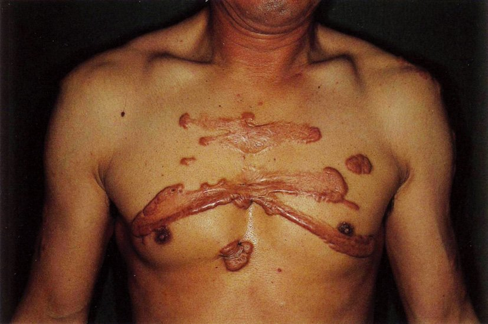
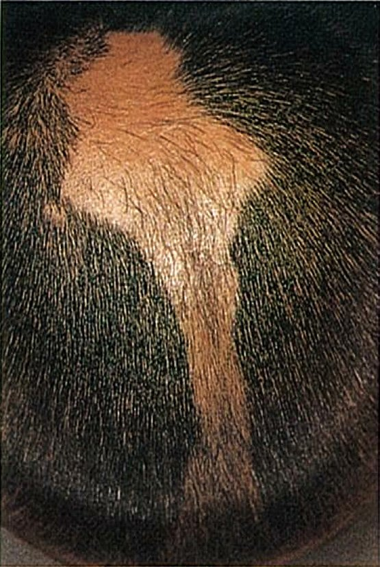
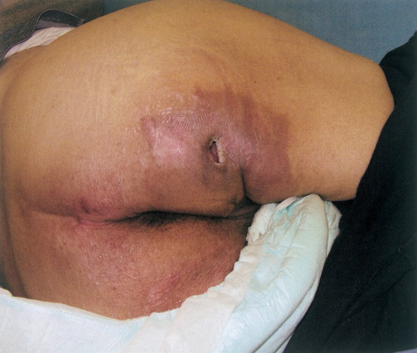
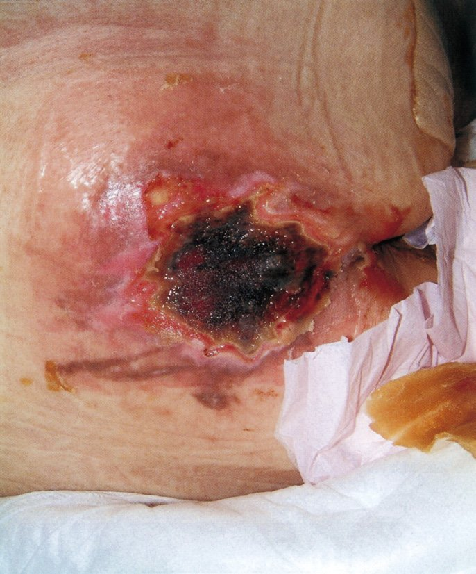
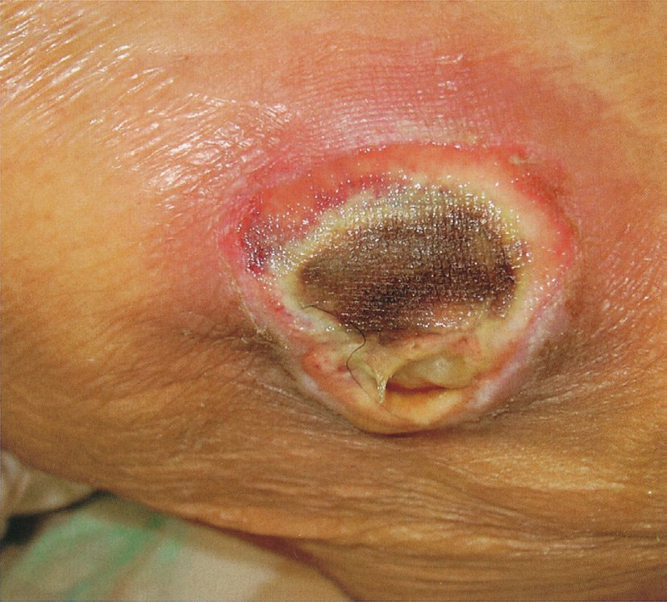
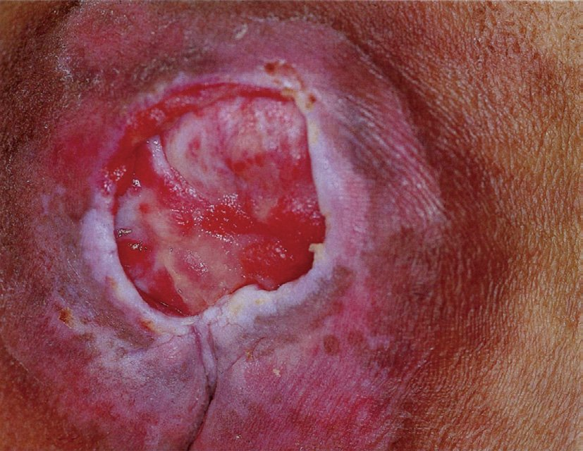

| 選択肢 | 解説 |
|---|---|
| ◯ ａ 凍 瘡 | ①冬季に屋外活動が増えてから発症、②手指全体の紅色腫脹、③瘙痒と疼痛、④暖まると軽減、⑤炎症反応も自己抗体も陰性——この5点は凍瘡〈しもやけ〉に典型的である。凍瘡は組織が凍結しない程度の寒冷曝露が反復して起こる末梢循環障害で、小児と若年女性の手指・足趾・耳介・鼻尖・頬に好発する。暖まると血管が拡張して瘙痒が強まるのも特徴的である。 |
| ｂ 蕁麻疹 | 蕁麻疹の本態は膨疹〈wheal〉——数十分〜数時間で出没し、個々の皮疹は24時間以内に痕を残さず消える。本例は1か月間持続しており、「出没する」経過ではない。寒冷刺激で誘発される寒冷蕁麻疹は鑑別に挙がるが、寒冷蕁麻疹は冷却負荷（氷囊試験）の直後数分で膨疹が出て、30分〜1時間で消えるのであって、持続する浮腫性紅斑にはならない。 |
| ｃ 多形滲出性紅斑 | 多形滲出性紅斑〈多形紅斑〉は、中心が暗紅色〜水疱化し辺縁が紅色の輪となる標的状〈target lesion〉皮疹が四肢伸側に左右対称に多発するもので、単純ヘルペスウイルス感染やマイコプラズマ感染、薬剤が誘因となる。「標的状」という形の記載がなく、季節性・温度依存性の経過も合わない。 |
| ｄ Raynaud症候群 | Raynaud現象は、寒冷や精神的緊張を契機に指趾が「蒼白→暗紫（チアノーゼ）→発赤」と三相性に色調変化する発作で、発作は数分〜数十分で終わり、間欠期には正常に戻る。本問はわざわざ「指先が蒼白になったり、紫色になったりするエピソードはない」と書いて、この選択肢を明示的に否定している。 |
| ｅ 全身性エリテマトーデス | SLEを疑う根拠が揃っていない。抗核抗体陰性というだけで実質的に除外できる（SLEの抗核抗体陽性率はほぼ100%でスクリーニングに使う）。発熱・関節痛・蝶形紅斑・光線過敏・口腔潰瘍・血球減少・尿所見のいずれも記載がなく、赤沈10mm/hr・CRP 0.1mg/dLと炎症所見も陰性である。なおSLEの一型に凍瘡状ループス〈chilblain lupus〉があり臨床像は凍瘡に酷似するが、それは抗核抗体陽性・通年性・難治という点で本例と異なる。 |
| 疾患 | 誘因と経過 | 皮疹 | 決め手 |
|---|---|---|---|
| 凍 瘡 | 寒冷の反復曝露／冬季に持続し春に軽快 | 指趾全体のびまん性浮腫性紅斑 | 加温で瘙痒が増強／自己抗体陰性 |
| 凍 傷 | 氷点下で組織が凍結／単回でも起こる | 水疱・壊死・知覚脱失 | 組織凍結の有無が凍瘡との本質的な違い |
| Raynaud現象 | 寒冷・精神的緊張／発作性で数分〜数十分 | 蒼白→暗紫→発赤の三相性色調変化 | 間欠期は正常／二次性なら爪郭毛細血管異常 |
| 凍瘡状ループス | 寒冷／通年性・難治 | 凍瘡に酷似した指趾の紫紅色斑 | 抗核抗体陽性・SLEの他症状 |
| 皮膚筋炎（Gottron徴候） | 季節性なし／進行性 | MCP・PIP・DIP 関節背面の角化性紅斑 | 近位筋力低下・CK上昇・爪郭の毛細血管拡張／悪性腫瘍の検索 |
| 選択肢 | 解説 |
|---|---|
| ａ 耳 介 | 耳介にも骨（軟骨）の突出はあるが、通常の体位で持続的に体重がかかる部位ではない。耳介の潰瘍は、酸素チューブやNPPVマスクのストラップによる「医療関連機器圧迫創傷〈MDRPU〉」として生じることが多く、体重による狭義の褥瘡の好発部位としては挙げない。 |
| ｂ 手 掌 | 手掌は皮下脂肪と厚い角層に覆われ、しかも体重が持続的にかかる部位ではない。「骨突出＋体重の持続的な圧」という褥瘡の成立条件を満たさない。 |
| ｃ 臍 | 臍は腹壁の陥凹で、骨突出がなく、仰臥位でも腹臥位でも持続的な圧がかからない。 |
| ｄ 外陰部 | 外陰部は軟部組織のみで骨の突出がない。失禁による湿潤で皮膚炎（失禁関連皮膚炎〈IAD〉）は起こしやすいが、これは褥瘡とは区別すべき病態で、実際に褥瘡と誤診されやすい鑑別点として問われる。 |
| ◯ ｅ 踵 部 | 踵部は仰臥位で踵骨が突出し、間に脂肪組織がほとんどない状態で全下肢の重みを受けるため、仙骨部に次ぐ褥瘡の好発部位である。しかも踵部は末梢動脈疾患の影響を受けやすく、一度潰瘍になると治りにくい。そのため予防では踵を浮かせる（ヒールオフ）＝下腿全体をクッションで支えて踵を接触させないことが標準的な指導になっている。 |
| 体位 | 好発部位（頻度順） | 予防のポイント |
|---|---|---|
| 仰臥位 | 仙骨部（最多）／踵部／後頭部／肩甲骨部／肘頭 | 踵はクッションで下腿を支えて浮かせる（ヒールオフ） |
| 側臥位 | 大転子部（最多）／腸骨稜／外果／耳介／膝関節外側 | 30度側臥位にして殿筋で支える |
| 座位（車椅子） | 坐骨結節部／尾骨部／背部 | 15分ごとのプッシュアップ・座圧分散クッション |
| 腹臥位 | 前額部／頬部／前胸部／腸骨稜／膝／足趾 | 腹臥位療法中は顔面の除圧を頻回に |
| 選択肢 | 解説 |
|---|---|
| ａ 異物を除去する。 | 正しい。創内の異物（砂・ガラス片・衣服の繊維・壊死組織）は感染巣となり、肉芽形成を妨げる。洗浄とデブリドマンによる異物除去は創傷処置の第一歩である。アスファルト片が残ると外傷性刺青となるため、受傷早期のブラッシング洗浄が必要になる。 |
| ◯ ｂ 黒色壊死は温存する。 | これが誤り。黒色壊死（エスカー）は血流の途絶した死んだ組織で、細菌の培地となり、肉芽の伸展を物理的に阻む。原則として除去（デブリドマン）するのが正しい対応で、本章ではQ.237・Q.242・Q.245・Q.246でも繰り返し問われている。（例外として、末梢動脈疾患があり血行再建の目処が立たない踵部の乾燥した安定した壊死は、あえて乾燥させたまま境界が明確になるのを待つことがある。国試ではこの例外は問われず「黒色壊死は除去する」で解答してよい。） |
| ｃ 深部臓器の損傷を確認する。 | 正しい。皮膚の創は氷山の一角で、外見の大きさと深部損傷の重症度は相関しない。刺創・銃創では体表の傷が小さくても腹腔内臓器・血管・神経・腱の損傷を伴いうるので、創の深さと走行、支配神経・腱の機能、画像評価を必ず確認する。 |
| ｄ 非感染創は一期的に縫合する。 | 正しい。受傷後おおむね6〜8時間以内（golden time）の汚染の少ない創は、洗浄・デブリドマンののち一期的縫合（一次治癒）とする。逆に感染創・高度汚染創・受傷から時間が経った創は縫合閉鎖せず、開放創として管理するか遅延一次縫合とする（→Q.235）。 |
| ｅ Ⅲ度熱傷では植皮が必要である。 | 正しい。Ⅲ度熱傷〈DB以深〉は表皮も真皮も全層が壊死しており、毛包・汗腺といった上皮再生の供給源が残っていない。したがって創縁からの上皮化しか望めず、小範囲を除いて自然治癒は期待できないので植皮が必要になる。Ⅱ度浅層（SDB）は付属器が残るため瘢痕を残さず上皮化するのと対照的である。 |
| 型 | 方法 | 適応 | 結果 |
|---|---|---|---|
| 一次治癒 | 洗浄・デブリドマン後ただちに縫合閉鎖 | 受傷6〜8時間以内の清潔創・手術創 | 瘢痕が小さく治癒が速い |
| 二次治癒 | 閉鎖せず開放創のまま肉芽で埋める | 感染創・組織欠損が大きい創・褥瘡 | 治癒に時間がかかり瘢痕拘縮を残しやすい |
| 遅延一次治癒 （三次治癒） | 数日開放して感染がないことを確認してから縫合 | 汚染創・受傷から時間が経った創 | 感染のリスクを避けつつ瘢痕を小さくできる |
| 選択肢 | 解説 |
|---|---|
| ａ 精神性発汗は亢進する。 | 正しい。手掌・足底・腋窩の汗腺は、温熱刺激よりも精神的緊張で発汗する「精神性発汗」の支配を強く受ける。掌蹠多汗症はまさにこの精神性発汗が過剰になった状態で、緊張する場面（試験・面接・握手）で悪化し、睡眠中には止まるのが典型である。 |
| ◯ ｂ 汗腺の数が増加している。 | これが誤り。原発性局所多汗症では、エクリン汗腺の数も組織学的な形態も正常で、異常なのは汗腺を支配する交感神経（コリン作動性）の活動が過剰なことである。つまり「腺が増えた」のではなく「腺を動かす指令が強すぎる」。だからこそ神経終末でのアセチルコリン放出を止めるボツリヌス毒素や、抗コリン薬、交感神経の遮断が治療として成立する。 |
| ｃ 真菌や細菌の感染を起こしやすい。 | 正しい。持続する湿潤は角層を浸軟させバリアを弱めるため、足白癬・カンジダ症のほか、Kytococcus（Micrococcus）などによる点状角質融解症〈pitted keratolysis〉——足底に多数の小陥凹と特有の悪臭を生じる——を合併しやすい。接触皮膚炎や異汗性湿疹〈汗疱〉も起こしやすい。 |
| ｄ 治療にはイオントフォレーシスが用いられる。 | 正しい。水道水イオントフォレーシスは、手足を水に浸して微弱な直流電流を流す治療で、掌蹠多汗症に対する保険適用のある標準治療である。汗管に可逆的な機能障害を起こして発汗を抑えると考えられており、効果を保つには反復して行う必要がある。 |
| ｅ Minor法はヨードデンプン反応を利用した検査法である。 | 正しい。Minor法〈ヨード・デンプン法〉は、皮膚にヨードを塗ってからデンプンを散布し、発汗部でヨードデンプン反応が起きて青紫〜黒色に呈色するのを見る検査である。発汗の部位と範囲を可視化でき、多汗症の評価や無汗症・Horner症候群の発汗異常の局在診断にも使う。 |
| 種類 | 刺激 | 部位 | 神経 |
|---|---|---|---|
| 温熱性発汗 | 深部体温の上昇 | 手掌・足底を除く全身 | 交感神経（コリン作動性）／視床下部が中枢 |
| 精神性発汗 | 精神的緊張・情動 | 手掌・足底・腋窩 | 交感神経（コリン作動性）／大脳皮質・大脳辺縁系が中枢 |
| 味覚性発汗 | 辛味・酸味 | 顔面（前額・鼻・口囲） | 耳介側頭神経（Frey症候群では耳下腺手術後に異常再生して起こる） |
| 選択肢 | 解説 |
|---|---|
| ◯ ａ 脂肪腫 | 脂肪腫は皮下脂肪織に発生する良性腫瘍で、病変が表皮より深い層にある。直上の表皮は正常のまま押し上げられるだけなので、触診では「表面平滑・弾性軟・可動性良好な皮下腫瘤」として触れる。「表面の性状は、病変が表皮にあるか皮下にあるかで決まる」という原則がそのまま答えになる問題である。 |
| ｂ Bowen病 | Bowen病は表皮内有棘細胞癌〈上皮内癌〉で、病変が表皮そのものにある。境界明瞭で不整形の紅褐色斑に、角化性の鱗屑・痂皮が付着してざらついた手触りになる。単発の難治性「湿疹」として長く治療されていた既往が手がかりになる。 |
| ｃ 尋常性疣贅 | ヒト乳頭腫ウイルス〈HPV〉感染により表皮が乳頭腫状に増殖するため、表面はザラザラと粗糙で、時に亀裂を伴う。削ると点状の黒色点（乳頭層内の血管の血栓）が見えるのが特徴的で、鶏眼〈うおのめ〉との鑑別点になる。 |
| ｄ 脂漏性角化症 | 脂漏性角化症〈老人性疣贅〉は表皮角化細胞の良性増殖で、境界明瞭・扁平隆起性で、表面には脂ぎった疣状の角質が付着する。「皮膚の上に貼り付けたよう〈stuck-on appearance〉」と表現され、ダーモスコピーでは面皰様開大と稗粒腫様囊腫を認める。表面は明らかに粗糙である。 |
| ｅ ケラトアカントーマ | ケラトアカントーマは数週で急速に増大するドーム状結節で、中央に角栓を容れた噴火口状の陥凹〈crater〉をもつ。この中央の角栓こそが特徴であり、表面は平滑ではない。数か月で自然消退しうるが、高分化型有棘細胞癌との鑑別が組織学的にも難しく、切除が推奨される。 |
| 腫瘍 | 深さ | 表面 | 特徴的所見 |
|---|---|---|---|
| 脂肪腫 | 皮下脂肪織 | 平滑（表皮は正常） | 弾性軟・可動性良好・無痛 |
| 表皮囊腫 | 真皮〜皮下 | 平滑 | 中央に黒色の開口部・圧迫で粥状内容と悪臭 |
| 皮膚線維腫 | 真皮 | ほぼ平滑〜やや粗 | つまむと陥凹する dimple sign |
| 脂漏性角化症 | 表皮 | 疣状・脂ぎった角質 | 貼り付けたような外観〈stuck-on〉 |
| 尋常性疣贅 | 表皮（HPV） | 粗糙・乳頭腫状 | 削ると点状出血（黒点） |
| Bowen病 | 表皮内癌 | 鱗屑・痂皮でざらつく | 難治性の「湿疹」として経過／境界明瞭な紅褐色斑 |
| ケラトアカントーマ | 表皮〜真皮 | 中央に角栓＝噴火口状 | 数週で急速増大／有棘細胞癌との鑑別が難しい |
| 選択肢 | 解説 |
|---|---|
| ◯ ａ 抜毛は頭髪が最も多い。 | 正しい。抜毛症で抜かれる毛は頭髪が最も多く、次いで眉毛・睫毛、思春期以降では陰毛も対象になる。利き手側の前頭〜頭頂部に生じやすく、手が届きやすい部位に偏る（非対称・不整形になる）のもこのためである。 |
| ｂ 円形脱毛症に分類される。 | 誤り。円形脱毛症は毛包を標的とする自己免疫性の脱毛症であるのに対し、抜毛症は患者自身が毛を抜くという行動によって生じる「精神・行動の問題」である。DSM-5では強迫症および関連症群〈obsessive-compulsive and related disorders〉に分類され、皮膚むしり症とともに「身体に焦点づけられた反復行動」として扱われる。 |
| ◯ ｃ 診断は視診で可能である。 | 正しい。境界が不明瞭で不整形（多くは非円形）、脱毛斑の中に長短さまざまな断裂毛が残り、完全な無毛にはならない——この所見は視診で捉えられる。加えて脱毛斑周囲の毛を引っ張っても容易には抜けない（牽引試験〈pull test〉陰性）ことが活動期の円形脱毛症（陽性）との区別になる（→Q.239）。診断に迷う例では生検やダーモスコピーを併用するが、通常は視診と病歴で診断できる。 |
| ｄ 抗精神病薬が有効である。 | 誤り。抜毛症の治療の中心は行動療法、とくにハビットリバーサル訓練〈habit reversal training〉である。薬物療法を併用する場合もSSRIやN-アセチルシステインなどが検討されるのであって、抗精神病薬が第一選択でも標準治療でもない。「抜毛は幻覚・妄想に基づく行動ではない」ので抗精神病薬の適応にならないと考えると理解しやすい。 |
| ｅ 成人期発症例は予後良好である。 | 誤り——逆である。小児期に発症する例（とくに幼児期）は一過性で自然軽快しやすく予後良好だが、思春期以降・成人期に発症した例は慢性に経過し、抑うつ・不安障害・強迫症の併存も多く難治である。成人例では長期の行動療法と精神科的介入を要する。 |
| 疾患 | 脱毛斑の形 | 残存毛 | 牽引試験 | 治療 |
|---|---|---|---|---|
| 円形脱毛症 | 境界明瞭な円形・完全脱毛 | 感嘆符毛〈!毛〉・断裂毛 | 活動期に陽性 | ステロイド外用・局注、SADBEなど局所免疫療法 |
| 抜毛症 | 不整形・非対称／完全脱毛にならない | 長短不揃いの断裂毛 | 陰性 | 行動療法（ハビットリバーサル） |
| 男性型脱毛症 | 前頭部生え際の後退と頭頂部の菲薄化 | 軟毛化した細く短い毛 | 陰性 | フィナステリド・デュタステリド内服／ミノキシジル外用 |
| Celsus禿瘡 | 膿疱・排膿を伴う炎症性の腫瘤 | 毛は容易に抜ける | 陽性（容易に抜ける） | 抗真菌薬の内服（白癬菌の深在性感染） |
| 瘢痕性脱毛症 | 皮膚は萎縮・光沢／毛孔が消失 | なし | — | 原疾患の治療（不可逆） |
| 選択肢 | 解説 |
|---|---|
| ａ 低栄養 | 関与する。低栄養は皮下脂肪と筋肉を減らして骨突出を目立たせ、クッションを失わせる。同時に低アルブミン血症による浮腫、創傷治癒に必要な蛋白・亜鉛・ビタミンの不足を招くため、発生因子であると同時に治癒遷延因子でもある（→Q.243）。 |
| ｂ 関節拘縮 | 関与する。関節拘縮があると同一部位に圧が集中し、自力での体位変換も介助での除圧も難しくなる。屈曲拘縮した膝の内側どうし、内果どうしが接触して褥瘡になるなど、通常は好発部位でない場所にも生じうる。 |
| ◯ ｃ 知覚過敏 | これが関与しない。褥瘡の危険因子になるのは知覚の「低下・麻痺」であって「過敏」ではない。健常者が褥瘡にならないのは、痛みや不快感を感じて無意識に寝返りを打つからで、脊髄損傷・糖尿病性神経障害・意識障害・鎮静下ではこの警告信号が働かないために褥瘡ができる。知覚が過敏であればむしろ圧迫の不快をより強く感じて早く体位を変えるので、発生を促す方向には働かない。 |
| ｄ 皮膚の乾燥 | 関与する。乾燥した皮膚は角層のバリア機能が落ち、摩擦・ずれに対して脆弱になる。ブレーデンスケールなどのリスクアセスメントでも皮膚の乾燥は危険因子として扱われ、保湿がケアの一項目になっている。⚠️ ただし100G-70（→Q.236）では「褥瘡を起こしにくいもの」の正解が皮膚の乾燥になっている。やせ・貧血・関節拘縮・低アルブミン血症というより強い因子と並べられたための相対評価で、年度によって扱いが揺れる項目である。 |
| ｅ 全身麻酔下での手術 | 関与する。全身麻酔下では意識も体動もなく、筋緊張が失われ、血圧低下で組織灌流も落ちる。手術時間が2時間を超えると術中褥瘡のリスクが上がるとされ、とくに砕石位・側臥位・腹臥位といった特殊体位の長時間手術では仙骨部・腸骨部・顔面に褥瘡が生じる。体位固定具による圧迫も加わる。 |
| 項目 | 評価する内容 | 対応するケア |
|---|---|---|
| 知覚の認知 | 圧迫による不快感を感じ取れるか | 感じられない患者は他動的な体位変換が必須 |
| 湿 潤 | 失禁・発汗で皮膚が濡れている程度 | 撥水性皮膚保護剤・排泄ケア |
| 活動性 | 歩行できるか／寝たきりか | 離床の促進 |
| 可動性 | 自力で体位を変えられるか | 2時間ごとの体位変換・体圧分散マットレス |
| 栄養状態 | 摂取量・血清アルブミン | 高蛋白・高エネルギー、亜鉛・ビタミンの補給 |
| 摩擦とずれ | 移乗や体位で皮膚が引きずられるか | ギャッジアップは30度まで・背抜き・スライディングシート |
| 選択肢 | 解説 |
|---|---|
| ａ 抜毛症 | 抜毛症は自ら毛を抜く行動による脱毛であり、毛包に炎症があるわけではないのでステロイド外用は無効である。治療の中心はハビットリバーサル訓練などの行動療法（→Q.228）。 |
| ◯ ｂ 円形脱毛症 | 円形脱毛症は毛包を標的とするT細胞性の自己免疫疾患で、成長期毛包の周囲にリンパ球が浸潤して毛の成長が止まる。この局所の免疫反応を抑える目的で副腎皮質ステロイドの外用（あるいは病巣内局注）が第一選択となる。単発型・少数個の限局型ではステロイド外用、成人の限局型では局注、広範囲・難治例ではSADBEやDPCPによる局所免疫療法、急速進行例ではステロイドパルス、重症例ではJAK阻害薬という段階になる。 |
| ｃ Celsus禿瘡 | Celsus禿瘡〈ケルスス禿瘡〉は白癬菌が毛包深部に侵入して起こる深在性白癬で、頭部に膿疱・排膿を伴う有痛性の腫瘤を作る。治療は抗真菌薬の内服（テルビナフィン、イトラコナゾール）であり、ステロイド外用は真菌感染を悪化・修飾（異型白癬〈tinea incognito〉）させるので不適切である。「脱毛＋膿疱・排膿」を見たら真菌を疑ってKOH直接鏡検が鉄則。 |
| ｄ 男性型脱毛症 | 男性型脱毛症〈AGA〉はジヒドロテストステロン〈DHT〉により毛周期の成長期が短縮し、毛が軟毛化していく非炎症性の脱毛である。炎症がないのでステロイドは無効で、5α還元酵素阻害薬（フィナステリド・デュタステリド）の内服とミノキシジル外用が治療になる。女性の男性型脱毛症〈FAGA〉ではフィナステリドは禁忌（妊娠可能女性では催奇形性）。 |
| ｅ 梅毒性脱毛症 | 第2期梅毒でみられる、虫食い状の小脱毛斑〈moth-eaten alopecia〉が多発する脱毛である。原因はTreponema pallidumの感染そのものなので、治療はペニシリン（アモキシシリン内服、ベンジルペニシリンベンザチン筋注）であり、駆梅治療により脱毛は回復する。脱毛以外に手掌足底の梅毒性バラ疹・扁平コンジローマ・リンパ節腫脹を伴うので、それらを問診・診察で拾う。 |
| 脱毛症 | 原因 | 治療 |
|---|---|---|
| 円形脱毛症 | 毛包に対する自己免疫（局所の炎症） | ステロイド外用・局注／局所免疫療法／JAK阻害薬 |
| Celsus禿瘡 | 白癬菌の毛包深部感染 | 抗真菌薬の内服（ステロイドは悪化させる） |
| 梅毒性脱毛症 | 第2期梅毒（虫食い状脱毛） | ペニシリン |
| 男性型脱毛症 | DHTによる毛周期短縮・軟毛化 | フィナステリド／デュタステリド内服・ミノキシジル外用 |
| 抜毛症 | 自らの抜毛行動 | 行動療法（ハビットリバーサル） |
| 休止期脱毛 | 分娩後・高熱・手術・急激な減量・薬剤 | 誘因の除去（数か月で自然回復） |
| 抗癌薬による脱毛 | 成長期毛の障害（成長期脱毛） | 治療終了後に再生（頭皮冷却の試み） |
| 選択肢 | 解説 |
|---|---|
| ａ 潮 紅 | 潮紅（発赤）は肥厚性瘢痕にもケロイドにも共通して認められる。いずれも真皮内の血管増生と炎症を伴うため、活動期には赤みを帯びて隆起する。区別の決め手にならない。 |
| ｂ 瘙 痒 | 瘙痒も両者に共通する症状である。肥厚性瘢痕・ケロイドとも肥満細胞の増加とヒスタミン遊離があり、瘙痒や疼痛を訴える。実際、抗アレルギー薬のトラニラストは肥満細胞からの化学伝達物質遊離を抑える目的で両者に用いられる。 |
| ｃ 疼 痛 | 疼痛・圧痛も両者に共通する。とくに関節部や胸骨前部など張力のかかる部位では、肥厚性瘢痕でも自発痛・圧痛を伴う。 |
| ｄ 隆 起 | 「盛り上がる」ことは肥厚性瘢痕もケロイドも同じで、むしろ両者の共通点として定義に含まれる（＝過剰な瘢痕形成による隆起性病変）。隆起の有無ではなく「どこまで広がるか」が両者を分ける。 |
| ◯ ｅ 拡大傾向 | これが決定的な違いである。肥厚性瘢痕は「元の創の範囲内」にとどまり、時間とともに（半年〜数年で）平坦化・退色して自然に軽快するのに対し、ケロイドは元の創の境界を越えて周囲の健常皮膚へ浸潤性に拡大し、自然消退しない。この「原創部を越えるか否か」が両者の唯一かつ最重要の鑑別点で、蟹の足のように側方へ伸びる外観からケロイド〈keloid〉の名がついた。 |
| 肥厚性瘢痕 | ケロイド | |
|---|---|---|
| 範 囲 | 原創部の範囲内にとどまる | 原創部を越えて健常皮膚へ拡大 |
| 経 過 | 半年〜数年で平坦化・退色（自然軽快する） | 自然消退しない・持続的に増大 |
| 誘 因 | 明らかな外傷・手術・熱傷／創の感染や離開 | 軽微な外傷でも（ざ瘡・ピアス・BCG）／体質・家族歴 |
| 好発部位 | 関節部・張力のかかる部位 | 前胸部・肩・上腕・下腹部・恥骨上・耳垂 |
| 症 状 | 潮紅・瘙痒・疼痛・隆起——これらは両者に共通で鑑別に使えない | |
| 組 織 | 膠原線維は細く配列は比較的規則的 | 太く硝子様のケロイド膠原線維 |
| 手 術 | 拘縮に対して形成術（再発は比較的少ない） | 単純切除では再発する→切除＋減張＋術後放射線 |
| 選択肢 | 解説 |
|---|---|
| ａ 痂皮形成 | かつては「傷はかさぶたを作って乾かして治す」と考えられていたが、現在は否定されている。痂皮は乾燥した創面にできる壊死物質と滲出液の塊で、角化細胞はその下を潜って遊走しなければならず上皮化が遅れる。乾燥は治癒を遅らせる（→Q.247）。 |
| ｂ 血腫形成 | 創内の血腫は、細菌の格好の培地となり感染を招く。また死腔を作って創縁の接着を妨げ、治癒を遷延させる（→Q.235の選択肢a）。術後にドレーンを置くのは、まさにこの血腫・死腔を作らないためである。 |
| ◯ ｃ 湿潤環境 | これが正しい。創面を適度に湿った状態に保つ「湿潤環境下療法〈moist wound healing〉」が現代の創傷治療の基本原則である。滲出液の中には細胞成長因子・サイトカイン・各種細胞が含まれており、これを乾かさずに保つことで角化細胞の遊走が速まり、上皮化が促進される。実践としては創を消毒せず生理食塩液や微温湯で洗浄し、ポリウレタンフィルム・ハイドロコロイド・アルギン酸塩などの創傷被覆材〈ドレッシング材〉で覆う。ただし「湿潤」は「浸軟〈maceration〉」とは違う——滲出液が多すぎると創周囲の健常皮膚がふやけて悪化するので、滲出液の量に応じて吸収性の異なる被覆材を選ぶ。 |
| ｄ 創部圧迫 | 圧迫こそが褥瘡の原因である。治療中も除圧を続けなければ、どれほど適切な局所処置をしても治癒しない。体位変換と体圧分散寝具による除圧は、褥瘡治療の前提条件である。 |
| ｅ 創部消毒 | 消毒薬（ポビドンヨード、次亜塩素酸、クロルヘキシジンなど）は細菌だけでなく、創面の線維芽細胞・血管内皮細胞・角化細胞にも細胞毒性を示す。日常的な創部消毒は肉芽形成と上皮化を妨げるので行わない。創面の細菌数を減らす最も有効な手段は「十分量の水（微温湯・生理食塩液）による洗浄」で、消毒を行うのは明らかな感染徴候がある場合に限られる。 |
| 状態 | やること | やってはいけないこと |
|---|---|---|
| 黒色壊死（エスカー） | デブリドマン（外科的・化学的） | 温存する・乾燥させて放置する |
| 感染・炎症 | 洗浄・デブリドマン・（必要なら）抗菌薬 | 密閉して閉じ込める |
| 滲出液が多い | 吸収性の被覆材（アルギン酸塩・フォーム） | 密閉して浸軟させる |
| 滲出液が少ない・乾燥 | ハイドロコロイド・ハイドロジェルで湿潤を保つ | 乾かす・痂皮を作らせる |
| 良性肉芽 | 湿潤を保って上皮化を待つ／必要なら植皮・皮弁 | 消毒する（肉芽を傷める） |
| 全身状態 | 除圧の継続・高蛋白高エネルギーの栄養管理 | 局所処置だけで済ませる |
| 選択肢 | 解説 |
|---|---|
| ａ 泡沫細胞 | 泡沫細胞〈foam cell〉は、酸化LDLを取り込んで脂質を蓄えたマクロファージである。粥状硬化巣の脂質コアや黄色腫〈xanthoma〉、黄色肉芽腫でみられる細胞であって、通常の肉芽組織の構成要素ではない。 |
| ｂ 脂肪細胞 | 肉芽組織は毛細血管・線維芽細胞・炎症細胞からなる「幼若な結合組織」であり、脂肪細胞が増殖して創を埋めるわけではない。 |
| ◯ ｃ 線維芽細胞 | 線維芽細胞は肉芽組織の主役である。マクロファージが放出するPDGF・TGF-βに反応して創部へ遊走・増殖し、Ⅲ型コラーゲンとフィブロネクチンを産生して創を埋める細胞外基質を作る。一部は平滑筋アクチンを発現する筋線維芽細胞〈myofibroblast〉に分化し、創を収縮させて面積を縮める（創収縮）。この働きが過剰・遷延すると肥厚性瘢痕やケロイドになる（→Q.231）。 |
| ｄ 横紋筋細胞 | 横紋筋細胞は再生能に乏しく、損傷を受けると多くは線維組織（瘢痕）に置き換わる。肉芽形成の場面で「増える細胞」として挙がることはない。再生能力の高い組織（表皮・粘膜上皮・肝細胞・骨髄）と、乏しい組織（心筋・骨格筋・神経細胞）の対比として押さえておく。 |
| ◯ ｅ 血管内皮細胞 | 肉芽組織のもう一方の主役が新生血管である。低酸素と炎症性サイトカインに誘導されてVEGF・FGFが放出され、既存の血管から血管内皮細胞が増殖・遊走して毛細血管を新生する（血管新生）。この毛細血管が豊富にあるために肉芽組織は鮮紅色で易出血性に見える。酸素と栄養を運ぶこの血管網なしには線維芽細胞も働けないので、虚血（末梢動脈疾患・貧血・喫煙）が創傷治癒を強く阻害するのはこの段階が破綻するからである。 |
| 相 | 時期 | 主役 | 起こること |
|---|---|---|---|
| ①止血期 | 受傷直後〜数時間 | 血小板 | 凝集・フィブリン網形成／PDGF・TGF-βの放出 |
| ②炎症期 | 〜3日 | 好中球→マクロファージ | 細菌・異物・壊死組織の除去／成長因子の放出 |
| ③増殖期 | 3日〜数週 | 線維芽細胞・血管内皮細胞・角化細胞 | 肉芽形成（血管新生＋コラーゲン産生）・創収縮・上皮化 |
| ④成熟期 | 数週〜1年以上 | 線維芽細胞 | Ⅲ型→Ⅰ型コラーゲンへの置換・血管退縮・瘢痕の平坦化と退色 |
| 選択肢 | 解説 |
|---|---|
| ａ 消 毒 | 皮膚は破綻しておらず（紅斑のみ）、感染徴候もない。消毒薬は皮膚のバリアや正常細菌叢を損ない、創ができた場合には肉芽形成を妨げるので、この段階で行う処置ではない。 |
| ◯ ｂ 体位変換 | 正しい。褥瘡の原因は「同じ部位に圧が持続すること」なので、最初にすべきは圧をかけ続けるのをやめることである。2時間を超えない間隔での体位変換（体圧分散マットレス使用時は4時間まで延長可）が標準である。この段階（持続する発赤＝DESIGN-Rのd1）で除圧すれば可逆的に治りうるのが最大の要点である。 |
| ｃ 切開処置 | 紅斑の段階で切開する適応はない。切開排膿が必要になるのは、深部に膿瘍やポケットを形成した場合で、本例のように皮膚が破綻していない持続性発赤とは病期がまったく異なる。 |
| ◯ ｄ 除圧処置 | 正しい。体位変換に加えて、体圧分散寝具（エアマットレス・ウレタンフォームマットレス）を用いて接触面積を広げ、局所の圧を下げる。ギャッジアップは30度までとし、挙上後は「背抜き」をしてずれを解放する。体位変換（時間軸の除圧）と体圧分散寝具（空間軸の除圧）は車の両輪で、どちらか一方では足りない。 |
| ｅ 抗菌薬投与 | 感染徴候（発熱・膿・悪臭・周囲の熱感と腫脹・炎症反応の上昇）がない。褥瘡に対する予防的な抗菌薬投与は推奨されておらず、耐性菌を生むだけである。抗菌薬が必要になるのは、蜂窩織炎・骨髄炎・敗血症といった深部感染を伴う場合（→Q.237）。 |
| ステージ | 所見 | 対応 |
|---|---|---|
| Ⅰ | 消退しない発赤（皮膚は破綻していない） | 除圧のみで可逆的——本問はここ |
| Ⅱ | 真皮までの部分欠損（水疱・びらん・浅い潰瘍） | 除圧＋湿潤環境（ハイドロコロイド等） |
| Ⅲ | 皮下脂肪織まで達する全層欠損（筋・骨は露出しない） | デブリドマン＋湿潤環境＋栄養管理 |
| Ⅳ | 筋・腱・骨に達する全層欠損 | 外科的デブリドマン・骨髄炎の評価・皮弁形成 |
| 判定不能 | 壊死組織に覆われて深さが評価できない | まずデブリドマンして深さを確認する |
| 深部損傷褥瘡〈DTI〉 | 紫色〜暗赤色の限局した変色または血疱 | 見た目より深い／数日で広範な潰瘍として顕在化しうる |
| 選択肢 | 解説 |
|---|---|
| ◯ ａ 死腔〈dead space〉は創傷治癒遷延の原因となる。 | 正しい。死腔とは創内に残った空隙のことで、そこに血液・滲出液が貯留すると細菌の培地となり感染を招く。また創面どうしが接着できず、肉芽で埋まるのに時間がかかる。これを防ぐために、深部から層ごとに縫合して死腔を作らない、ドレーンを留置して貯留液を逃がす、圧迫固定するといった配慮を行う。 |
| ｂ 壊死組織のデブリドマンは創傷治癒を遅らせる。 | 逆である。壊死組織は細菌の温床となり、炎症期からの脱却を妨げ、肉芽の伸展を物理的に阻む。デブリドマンによる除去は治癒を促進する処置であり、TIMEコンセプトのT（Tissue）そのものである。 |
| ｃ 開放創の洗浄に生理食塩液は用いない。 | 誤り。生理食塩液は等張で細胞毒性がなく、開放創の洗浄に最も適した液体である。水道水（微温湯）による洗浄も有効かつ安全とされ、在宅や入浴時のシャワー洗浄が広く行われている。避けるべきは消毒薬の日常的使用の方である。 |
| ｄ 創の感染には組織の血行は関係がない。 | 誤り。血流は好中球・マクロファージ・抗体・酸素・栄養・抗菌薬を創部へ運ぶ経路そのものである。末梢動脈疾患・糖尿病・喫煙・放射線照射後のように血行が悪い組織では、感染が成立しやすく、いったん感染すると難治になる。好中球の殺菌には酸素が必要（活性酸素の産生）という点でも組織酸素分圧は感染防御に直結する。 |
| ｅ 感染創は縫合して一次治癒とする。 | 誤り。最も避けるべき対応である。感染した創を閉鎖すると、閉じ込められた菌と滲出液が膿瘍を形成し、蜂窩織炎から敗血症へ進みうる。感染創は開放して十分にドレナージし、洗浄とデブリドマンを行って二次治癒とするか、感染が鎮まってから縫合する遅延一次縫合とする（→Q.225）。 |
| 因子 | 機序と対策 | |
|---|---|---|
| 局 所 | 死腔・血腫 | 感染の培地／創面が接着しない→層縫合・ドレナージ・NPWT |
| 壊死組織・異物 | 炎症期から抜け出せない→デブリドマン・洗浄 | |
| 感 染 | コラーゲン分解の亢進→開放ドレナージ・（必要なら）抗菌薬 | |
| 血行障害 | 酸素・免疫細胞・薬剤が届かない→血行再建・禁煙・除圧 | |
| 乾燥・創の可動 | 上皮化が遅れる／肉芽が壊れる→湿潤環境・安静固定 | |
| 全 身 | 低栄養（蛋白・亜鉛・ビタミンC） | コラーゲン合成の材料不足→高蛋白・微量元素の補給 |
| 糖尿病 | 好中球機能低下・微小血管障害・神経障害 | |
| ステロイド・免疫抑制薬・抗癌薬 | 炎症期と線維芽細胞増殖の抑制 | |
| 放射線照射・貧血・肝硬変・腎不全・喫煙・加齢 | 組織の低酸素と再生能の低下 |
| 選択肢 | 解説 |
|---|---|
| ａ や せ | 起こしやすい。皮下脂肪と筋肉が減ると骨突出が目立ち、骨と支持面の間のクッションが失われるため、同じ体重でも局所にかかる圧が高くなる。るいそうは褥瘡の代表的な危険因子である。 |
| ｂ 貧 血 | 起こしやすい。貧血は組織への酸素運搬能を低下させ、圧迫による阻血に対する組織の耐性を下げる。発生因子であると同時に、できた褥瘡の治癒も遅らせる。 |
| ｃ 関節拘縮 | 起こしやすい。拘縮があると同一部位に圧が集中し、体位変換も難しくなる。屈曲拘縮した四肢どうしが接触する部位（膝の内側、内果）にも褥瘡ができる。 |
| ◯ ｄ 皮膚の乾燥 | 本問ではこれが正解とされている。他の4つ（やせ・貧血・関節拘縮・低アルブミン血症）が「除圧できない」「組織が弱い」という褥瘡の中核的な危険因子であるのに対し、皮膚の乾燥はそれらに比べると関与の度合いが小さい——という相対評価による正解である。⚠️ ただし110I-16（→Q.229）では「褥瘡の発生に関与しないのはどれか」の選択肢として皮膚の乾燥が挙がり、そこでは「関与する」側に置かれている。現在のリスクアセスメント（ブレーデンスケール等）でも乾燥は角層バリアを弱めて摩擦・ずれに脆弱にする因子として扱われ、保湿がケアの一項目になっている。実戦的には「乾燥より湿潤（失禁・発汗）の方が褥瘡の危険因子として重い」「他の選択肢がより強い因子なら乾燥を選ぶ」と整理しておくとよい。 |
| ｅ 低アルブミン血症 | 起こしやすい。低栄養の指標であると同時に、膠質浸透圧の低下による浮腫を招く。浮腫んだ皮膚は菲薄化して脆弱になり、組織の酸素拡散距離も延びるため褥瘡ができやすくなる。血清アルブミン3.0g/dL未満は高リスクの目安とされる。 |
| 重み | 因子 | 理由 |
|---|---|---|
| 中核（必発条件に近い） | 可動性の低下・活動性の低下・知覚の低下／麻痺 | 除圧できない＝褥瘡の成立条件そのもの |
| 強 い | やせ・低栄養・低アルブミン血症・貧血・関節拘縮・浮腫 | クッションの喪失と組織の脆弱化 |
| 強 い | 失禁・発汗による湿潤／摩擦とずれ | 角層の浸軟でずれに脆弱になる |
| 相対的に弱い | 皮膚の乾燥 | バリア低下は起こすが、単独では褥瘡を作らない |
| —（関与しない） | 知覚過敏 | むしろ不快を感じて体位を変える方向に働く |
| 選択肢 | 解説 |
|---|---|
| ａ 洗 浄 | 洗浄は褥瘡ケアの基本であり毎日行うべき処置だが、黒色壊死が固着している段階では、洗浄だけでは壊死組織も、その下に潜む感染も除去できない。「最も重要なのは」と問われれば、感染源そのものを断つデブリドマンが優先される。 |
| ｂ 消 毒 | 消毒薬は壊死組織の内部までは浸透せず、一方で正常な肉芽・線維芽細胞には細胞毒性を示す。壊死組織を残したまま表面を消毒しても感染は制御できない。 |
| ◯ ｃ デブリドマン | これが最も重要である。入院時の発赤が5日で黒褐色変色（＝壊死）に進行し、周辺に腫脹と熱感を伴っている——これは壊死組織を培地として感染が起こり、周囲へ波及し始めている状態（感染性褥瘡）である。壊死組織は血流が無く、抗菌薬も免疫細胞も届かない「治療のきかない聖域」になっているので、まずこれを外科的に除去して感染源とドレナージ不良を解消するのが治療の要になる。壊死組織を取り除いて初めて、洗浄・被覆・抗菌薬といった他の処置が意味をもつ。 |
| ｄ 外用抗菌薬塗布 | 外用抗菌薬は表層には作用しうるが、厚い壊死組織の下や深部組織には到達しない。壊死組織を残したままの局所抗菌薬は、耐性菌を選択するだけで感染制御にはつながらない。 |
| ｅ 経口抗菌薬の変更 | 全身の抗菌薬は、蜂窩織炎・骨髄炎・菌血症といった深部・全身への波及がある場合に「併用する」ものである。血流の途絶した壊死組織には薬剤が届かないので、抗菌薬だけを変えても局所は改善しない。なお本例では肺炎はペニシリン系で改善しており、抗菌薬選択が誤っていたわけではない。 |
| 段階 | 所見 | 対応 |
|---|---|---|
| 定着〈colonization〉 | 細菌はいるが臨床症状なし | 洗浄と湿潤環境の維持のみ（抗菌薬は不要） |
| 臨界的定着 | 肉芽が浮腫状・脆弱、滲出液増加、治癒が停滞（バイオフィルム） | デブリドマン・銀含有被覆材 |
| 局所感染 | 発赤・腫脹・熱感・疼痛・膿・悪臭——本問はここ | 外科的デブリドマン＋開放ドレナージ |
| 深部・全身感染 | 蜂窩織炎／骨髄炎／菌血症・敗血症／発熱・CRP上昇 | デブリドマン＋全身抗菌薬／骨髄炎はMRI・骨生検で評価 |

| 選択肢 | 解説 |
|---|---|
| ａ 瘙痒を伴う。 | 正しい。ケロイドは肥満細胞の増加とヒスタミン遊離を伴い、瘙痒・疼痛・圧痛を訴えることが多い。この症状に対して抗アレルギー薬のトラニラストが用いられる。 |
| ｂ 良性である。 | 正しい。ケロイドは線維芽細胞とコラーゲンの過剰増殖による良性の線維性病変で、転移も悪性転化もしない。ただし局所的には浸潤性に拡大し、手術で再発するという「臨床的にはやっかいな良性疾患」である。 |
| ｃ 膠原線維が増殖する。 | 正しい。組織学的には真皮に太く硝子様に膨化した膠原線維（ケロイド膠原線維〈keloidal collagen〉）が不規則に増殖する。コラーゲンの産生が分解を上回った状態が持続している。 |
| ｄ 難治性である。 | 正しい。肥厚性瘢痕が半年〜数年で自然に平坦化・退色するのに対し、ケロイドは自然消退せず、治療にも抵抗性で再発を繰り返す。本例も10数年にわたり持続し、外傷のたびに増加している。 |
| ◯ ｅ 単純切除術が有効である。 | これが誤り。ケロイドを単純切除（切って縫うだけ）すると、創縁の張力と新たな創傷治癒反応が引き金となって高率に再発し、しばしば元より大きくなる。手術を行う場合は「切除＋張力を減らす縫合（Z形成術・皮弁による減張）＋術後早期（24〜48時間以内）からの放射線照射」をセットで行うのが標準である。第一選択はあくまで保存的治療——ステロイド局注・貼付、シリコンジェルシート、圧迫、トラニラスト内服。 |
| 疾患 | 特徴 | 鑑別のポイント |
|---|---|---|
| ケロイド | 原創部を越えて蟹の足状に拡大／自然消退しない | 前胸部・肩・恥骨上／軽微な外傷が誘因／体質 |
| 肥厚性瘢痕 | 原創部の範囲内にとどまる／数年で平坦化 | 明らかな外傷・手術・熱傷の既往／関節部 |
| 隆起性皮膚線維肉腫〈DFSP〉 | 体幹の緩徐に増大する硬い局面〜結節（悪性） | 単発・進行性／CD34陽性／広範切除が必要 |
| サルコイドーシス（瘢痕浸潤） | 既存の瘢痕部が浸潤・隆起して赤紫色になる | 両側肺門リンパ節腫脹・ぶどう膜炎・ACE上昇 |
| ざ瘡瘢痕 | 萎縮性（陥凹）が主体 | ケロイドは隆起、ざ瘡瘢痕は陥凹 |

| 選択肢 | 解説 |
|---|---|
| ａ 円形脱毛症 | 円形脱毛症なら、境界明瞭な円形〜楕円形の「完全な」脱毛斑になり、斑内に毛はほとんど残らない。また活動期には脱毛斑辺縁の毛が容易に抜け（牽引試験陽性）、感嘆符毛を認める。本例は「周囲の頭髪は容易に抜けない」と明記されており、この記載が円形脱毛症を否定するために置かれている。 |
| ｂ 粃糠性脱毛症 | 粃糠性脱毛症は、脂漏性皮膚炎などに伴い多量の細かい鱗屑（フケ）を伴ってびまん性に脱毛が進むものである。限局した脱毛斑を作らず、鱗屑の記載もない。 |
| ｃ 瘢痕性脱毛症 | 瘢痕性脱毛症では毛包が破壊されて毛孔が消失し、皮膚は萎縮して光沢を帯びる。不可逆で毛は再生しない。円板状エリテマトーデス〈DLE〉・扁平苔癬・深在性白癬（Celsus禿瘡）の瘢痕治癒などが原因だが、本例には萎縮・瘢痕の所見がない。 |
| ◯ ｄ 抜毛癖（trichotillomania） | これが正解。①手が届きやすい頭頂〜前頭部という部位、②不整形で境界不明瞭な脱毛斑、③斑内に長短不揃いの毛・断裂毛が残り完全な無毛にならない、④脱毛斑周囲の毛は容易に抜けない（牽引試験陰性）、⑤炎症所見がない——この組合せは抜毛癖〈抜毛症〉に典型的である。学童期の男児という好発年齢も合う。治療はハビットリバーサル訓練などの行動療法で、背景の心理社会的ストレスへの配慮が要る（→Q.228）。 |
| ｅ Celsus禿瘡 | Celsus禿瘡は白癬菌が毛包深部に侵入した深在性白癬で、膿疱・排膿・圧痛を伴う隆起性の腫瘤を作る。炎症が強く、毛は容易に抜ける（むしろ自然に脱落する）。本例には炎症・膿疱の記載がなく、「容易に抜けない」という記載とも矛盾する。治療は抗真菌薬の内服である。 |
| 疾患 | 形と境界 | 斑内の毛 | 炎症 | 牽引試験 |
|---|---|---|---|---|
| 円形脱毛症 | 円形・境界明瞭 | ほぼ無毛／感嘆符毛 | なし | 活動期に陽性 |
| 抜毛癖 | 不整形・境界不明瞭・非対称 | 長短不揃いの断裂毛が残る | なし | 陰性 |
| 頭部白癬（しらくも） | 類円形・鱗屑を伴う | 毛が根元で折れる（black dot） | 軽度〜中等度・鱗屑 | 陽性（脆く抜ける）／KOH鏡検で確定 |
| Celsus禿瘡 | 隆起した腫瘤・膿疱 | 脱落する | 強い（排膿・圧痛・所属リンパ節腫脹） | 陽性／抗真菌薬内服 |

| 選択肢 | 解説 |
|---|---|
| ◯ ａ 坐 骨 | 正しい。下肢対麻痺の患者は車椅子や座位で過ごす時間が長く、座位で最も強い圧を受けるのは坐骨結節部である。写真の潰瘍も殿部の下方外側寄り、坐骨結節に相当する位置にある。坐骨部褥瘡は深部に及びやすくポケットを形成しやすいため、治療に難渋するという記載とも合致する。予防は座圧分散クッションと15〜30分ごとのプッシュアップ（腕で体を持ち上げて坐骨を除圧する）である。 |
| ｂ 仙 骨 | 仙骨部は仰臥位で最も多い褥瘡好発部位だが、部位が殿裂の上方・正中であり、写真の潰瘍の位置と異なる。「寝たきり」なら仙骨部、「座位・車椅子」なら坐骨結節部という対応で判断する。 |
| ｃ 尾 骨 | 尾骨部も座位や仙骨座り（ずり落ちた姿勢）で褥瘡を生じうるが、位置は殿裂の最下端・正中である。写真の潰瘍は正中ではなく側方にあり合致しない。 |
| ｄ 腸 骨 | 腸骨稜は側臥位で褥瘡を生じうる部位だが、位置は腰部側面で殿部ではない。 |
| ｅ 大腿骨 | 大腿骨で褥瘡に関与するのは大転子部で、側臥位における最多の好発部位である（→Q.245）。ただし大転子は股関節の外側であって殿部ではない。 |
| 病歴のキーワード | 主な体位 | 褥瘡部位 |
|---|---|---|
| 脳梗塞で寝たきり／意識障害 | 仰臥位 | 仙骨部（最多）・踵部・後頭部・肩甲骨部 |
| 対麻痺・車椅子・座位が長い | 座位 | 坐骨結節部（本問）・尾骨部 |
| 側臥位で管理／片麻痺で同じ向き | 側臥位 | 大転子部（最多）・腸骨稜・外果・耳介 |
| ARDSの腹臥位療法／長時間の腹臥位手術 | 腹臥位 | 前額部・頬部・前胸部・腸骨稜・膝・足趾 |
| NPPV・気管チューブ・弾性ストッキング | — | 医療関連機器圧迫創傷〈MDRPU〉：鼻根部・口角・耳介・下腿 |
| 選択肢 | 解説 |
|---|---|
| ａ 消 毒 | 褥瘡は感染症ではなく、圧迫による阻血で生じる物理的な組織障害である。皮膚を消毒しても圧はなくならないので予防にならない。むしろ消毒薬は皮膚のバリアと常在菌叢を損なう。 |
| ◯ ｂ 体位変換 | これが最も有効である。褥瘡の成立条件は「同じ部位に圧が持続すること」なので、圧のかかる部位を定期的に変えること＝体位変換が原因に直接介入する唯一の手段である。2時間を超えない間隔が基本で、体圧分散マットレスを併用する場合は4時間まで延長してよいとされる。30度側臥位（殿筋の広い面で支え、仙骨・大転子への直接の圧を避ける）が推奨される。 |
| ｃ 抗菌薬投与 | 予防的な抗菌薬投与は褥瘡予防としての根拠がなく、耐性菌を生むだけである。抗菌薬が必要なのは、既にできた褥瘡に蜂窩織炎・骨髄炎・菌血症を合併した場合に限られる。 |
| ｄ 血糖コントロール | 糖尿病は創傷治癒を遅らせ感染を招く重要な全身因子であり、血糖管理は治療の一環として意味がある。しかし「最も有効な予防」を問われれば、原因である圧を除く体位変換が優先される。また要介護高齢者が全員糖尿病というわけでもない。 |
| ｅ ビタミンD製剤投与 | ビタミンDは骨代謝に関与し、高齢者の骨粗鬆症・転倒骨折の予防には意味があるが、褥瘡予防との直接の関係はない。創傷治癒に関わる栄養素は蛋白質・亜鉛・ビタミンC・ビタミンA・アルギニンであって、ビタミンDではない。 |
| 項目 | 基準 | 根拠・注意 |
|---|---|---|
| 体位変換の間隔 | 2時間以内（体圧分散寝具使用時は4時間まで） | 32mmHg以上の圧が2時間で組織障害を起こす |
| 側臥位の角度 | 30度 | 90度側臥位は大転子部に圧が集中して不可 |
| ギャッジアップ | 30度まで／挙上後は背抜き | それ以上はずれが強くなり仙骨部に剪断力がかかる |
| 座位のプッシュアップ | 15〜30分ごと | 座位は坐骨結節に圧が集中する |
| ブレーデンスケール | 14点以下で高リスク | 点数が低いほど危険（6〜23点） |
| 血清アルブミン | 3.0g/dL未満で高リスク | 栄養介入の指標 |
| 選択肢 | 解説 |
|---|---|
| ａ 創面は洗浄しない。 | 誤り。洗浄は褥瘡ケアの基本で、毎日、微温湯または生理食塩液を十分量用いて行う。創面の細菌数・壊死物質・古い滲出液を物理的に洗い流すことが最も有効な感染対策である。創周囲の皮膚も弱酸性洗浄剤で洗う。 |
| ｂ 体位は変換しない。 | 誤り。体位変換は予防だけでなく治療中も継続する。除圧を続けなければ、どれほど適切な局所処置をしても褥瘡は治らない。 |
| ｃ 黒色壊死は温存する。 | 誤り。黒色壊死は感染源となり肉芽形成を妨げるのでデブリドマンで除去する（→Q.225・Q.237）。 |
| ◯ ｄ 創面の湿潤環境を保つ。 | これが正しい。創面を適度に湿った状態に保つ湿潤環境下療法〈moist wound healing〉が現代の創傷治療の基本である。滲出液に含まれる細胞成長因子を活かし、角化細胞の遊走を助けて上皮化を促す。滲出液の量に応じて被覆材を選ぶ——少なければハイドロコロイド・ハイドロジェルで湿潤を与え、多ければアルギン酸塩・ポリウレタンフォームで吸収する。 |
| ｅ 亜鉛製剤の投与は控える。 | 誤り——逆である。亜鉛は細胞増殖・蛋白合成・コラーゲン形成に必須の微量元素で、欠乏すると創傷治癒が遅延する（→Q.248）。高齢者・低栄養・長期の経腸栄養では亜鉛欠乏をきたしやすく、褥瘡患者では血清亜鉛を測定して不足があれば補充する。亜鉛欠乏では味覚障害・脱毛・皮膚炎（口囲・肛囲）も生じる。 |
| 病態 | 部位・所見 | 原因 | 対応 |
|---|---|---|---|
| 褥 瘡 | 骨突出部に一致（仙骨・坐骨・大転子・踵）／境界明瞭 | 圧とずれ | 除圧・洗浄・湿潤環境・デブリドマン |
| 失禁関連皮膚炎〈IAD〉 | 会陰・肛囲・鼠径など骨突出部と無関係／びまん性の紅斑とびらん | 尿・便による化学的刺激と湿潤 | 排泄ケア・撥水性皮膚保護剤・（真菌感染合併なら抗真菌薬） |
| medical adhesive-related skin injury | テープ貼付部に一致した表皮剝離 | 粘着剤の剝離刺激 | 皮膜剤の使用・愛護的な剝離 |
| MDRPU | 鼻根部・耳介・下腿など機器の接触部 | 医療機器による圧迫 | 機器のサイズ調整・クッション材・装着部の変更 |

| 選択肢 | 解説 |
|---|---|
| ａ 女 性 | 性別そのものは褥瘡のリスクファクターではない。性差があるとすれば、女性の方が高齢まで生存し要介護状態になる人数が多いという疫学的な結果であって、女性であること自体が組織を脆弱にするわけではない。 |
| ｂ 低身長 | 身長140cmという値は高齢女性として特に異常ではなく、骨粗鬆症による円背・椎体圧迫骨折の結果でもありうる。身長そのものは褥瘡の危険因子ではない。問題なのは身長ではなく、身長に対して体重が少なすぎること（BMI 15.8＝るいそう）である。 |
| ◯ ｃ 低栄養 | これが正解。「半年前から経口摂取が不良」「やせが目立ってきた」「身長140cm・体重31kg（BMI 15.8）」という3つの記載が低栄養を明示している。低栄養は①皮下脂肪と筋肉を減らして骨突出を目立たせクッションを失わせる、②低アルブミン血症による浮腫で皮膚を脆弱にする、③創傷治癒に必要な蛋白・亜鉛・ビタミンを欠乏させる——という三重の機序で褥瘡の発生と難治化に関わる。本例では加えて「関節拘縮＋体位変換困難」という除圧できない条件も揃っており、いずれも危険因子だが、選択肢に挙がっているのは低栄養である。 |
| ｄ 高血圧 | 高血圧は動脈硬化を介して長期的には末梢循環に影響しうるが、褥瘡の直接的な危険因子として挙げられることはない。むしろ問題になるのは低血圧・ショックによる組織灌流の低下の方である。 |
| ｅ 皮膚の乾燥 | 「皮膚は乾燥している」という記載は確かにある。乾燥は角層バリアを弱めて摩擦・ずれに脆弱にする因子としてリスクアセスメントに含まれるが、本例で最も強く、かつ介入すべきリスクファクターは低栄養である。⚠️ 「皮膚の乾燥」の扱いは年度により揺れる——110I-16（Q.229）では「関与する」側、100G-70（Q.236）では「起こしにくい」側の正解になっている。選択肢の中での相対評価で決める。 |
| 症例文の記載 | 読み取れる危険因子 | 群 |
|---|---|---|
| 10年前に脳梗塞を発症し寝たきり | 活動性の低下・可動性の低下 | 除圧できない |
| 四肢関節の拘縮が進行、体位変換も困難 | 関節拘縮・除圧の困難 | 除圧できない |
| 経口摂取不良／やせ／BMI 15.8 | 低栄養——本問の正解 | 組織が弱い |
| 骨粗鬆症で15年治療中 | 円背・骨突出（脊柱の変形で仙骨部に圧が集中しやすい） | 組織が弱い |
| 皮膚は乾燥している | バリア機能の低下（相対的に弱い因子） | 局所環境 |
| 高血圧・女性・低身長 | 褥瘡の危険因子ではない | — |
| 選択肢 | 解説 |
|---|---|
| ａ 低蛋白血症 | 阻害する。コラーゲンをはじめとする細胞外基質の材料が不足し、線維芽細胞の増殖も上皮化も遅れる。加えて膠質浸透圧の低下による浮腫が組織の酸素拡散を妨げる。 |
| ◯ ｂ 脂質異常症 | これが阻害しない。高LDLコレステロール血症・高中性脂肪血症それ自体が創傷治癒を直接遅らせるという関係はない。長期的には動脈硬化を介して末梢循環障害を招きうるが、他の4つ（低蛋白血症・肝硬変・糖尿病・貧血）がいずれも直接的で確立した阻害因子であるのに対し、脂質異常症は創傷治癒の阻害因子として挙げられない。 |
| ｃ 肝硬変 | 阻害する。肝臓は蛋白合成の場であり、肝硬変では低アルブミン血症・凝固因子の産生低下・低栄養・浮腫・腹水が生じる。出血傾向と感染への抵抗性低下も加わり、創傷治癒は著しく遅れる。 |
| ｄ 糖尿病 | 阻害する——最も代表的な阻害因子。①好中球の遊走能・貪食能・殺菌能の低下による易感染性、②細小血管障害による組織灌流と酸素供給の低下、③末梢神経障害による知覚低下（外傷に気づかない・除圧できない）、④高血糖による線維芽細胞機能とコラーゲン合成の障害——4つの機序が重なる。糖尿病足病変が難治なのはこのためである。 |
| ｅ 貧 血 | 阻害する。創傷治癒には十分な組織酸素分圧が必要で、コラーゲンの水酸化にも好中球の殺菌（活性酸素の産生）にも酸素が要る。貧血は酸素運搬能を低下させてこれらすべてを妨げる。 |
| 栄養素 | 役割 | 欠乏で起こること |
|---|---|---|
| 蛋白質（アミノ酸） | コラーゲン・細胞の材料 | 肉芽形成不良・創離開・浮腫 |
| ビタミンC | プロリン・リジンの水酸化＝コラーゲンの架橋形成 | 壊血病（創が治らない・歯肉出血・点状出血） |
| 亜 鉛 | DNA・蛋白合成、細胞増殖（多数の酵素の補因子） | 創傷治癒遅延・味覚障害・脱毛・口囲や肛囲の皮膚炎 |
| ビタミンA | 上皮化・免疫機能／ステロイドの作用に拮抗 | 上皮化の遅延・易感染性 |
| アルギニン | コラーゲン合成・免疫賦活・NO産生 | （褥瘡治療の補助食品に配合される） |
| 鉄 | コラーゲン水酸化の補因子・酸素運搬 | 貧血による組織低酸素 |
| ビタミンB1 | 糖代謝（ピルビン酸脱水素酵素の補酵素） | 脚気・Wernicke脳症——創傷治癒とは直結しない |

| 選択肢 | 解説 |
|---|---|
| ◯ ａ デブリドマン | これが正しい。写真の右大転子部には、辺縁に発赤を伴う潰瘍と中央の厚い黒色壊死組織を認める。黒色壊死は血流が途絶した死んだ組織で、細菌の培地となり肉芽の伸展を妨げ、その下に潜む感染や真の深さを覆い隠す。これを除去して初めて創が「治りうる状態」になるので、まず行うのは外科的デブリドマンである。除去後は洗浄と湿潤環境の維持、そして除圧（体位変換・体圧分散寝具）の継続が必要になる。 |
| ｂ 抗凝固薬投与 | 本例の黒色壊死は「圧迫による阻血」の結果であって、血栓塞栓症によるものではない。抗凝固薬は病態に対応しないうえ、デブリドマン時の出血リスクを高める。 |
| ｃ 抗真菌薬塗布 | 真菌感染を示唆する所見（鱗屑・辺縁の環状拡大・衛星病巣・KOH鏡検陽性）がない。経過（紅斑→潰瘍化→黒色変色）は圧迫による褥瘡の進行そのものである。 |
| ｄ 副腎皮質ステロイド塗布 | ステロイドは炎症期を抑制し、線維芽細胞の増殖とコラーゲン産生を阻害するため創傷治癒を遅らせる。加えて易感染性を招く。潰瘍・壊死のある創に外用する薬ではない。 |
| ｅ 非ステロイド性抗炎症薬投与 | 疼痛緩和にはなりうるが、壊死組織も除圧の必要性も何ら解決しない。「まず行う」処置としては優先度が低い。 |
| 色 | 状態 | やること |
|---|---|---|
| 黒色期 | 乾燥した黒色壊死（エスカー）に覆われる | デブリドマン——本問はここ |
| 黄色期 | 黄色の軟らかい壊死（スラフ）と多量の滲出液 | 洗浄・デブリドマン・吸収性被覆材／感染対策 |
| 赤色期 | 鮮紅色の良性肉芽で創底が覆われる | 湿潤環境の維持／必要なら植皮・皮弁 |
| 白色期 | 創縁から白い上皮が伸びて閉鎖に向かう | 上皮を傷めない被覆材・保湿／除圧の継続 |
| 選択肢 | 解説 |
|---|---|
| ａ 1週ごとの観察 | 間隔が長すぎる。褥瘡は数日で急速に悪化しうるので、リスクのある患者では毎日（清拭・排泄ケアのたびに）骨突出部の皮膚を観察するのが原則である。早期の「消退しない発赤」を捉えられれば除圧だけで治せる（→Q.234）。 |
| ｂ 1か月ごとの栄養管理 | 栄養管理は継続的に行うもので、1か月に1度で足りるものではない。褥瘡のある患者では食事摂取量・体重・血清アルブミンを定期的に評価し、必要な熱量と蛋白（30〜35kcal/kg/日、蛋白1.2〜1.5g/kg/日）が実際に摂れているかを確認し続ける。 |
| ｃ 8時間ごとの体位変換 | 間隔が長すぎる。32mmHgを超える圧が2時間以上持続すると組織障害が始まるため、体位変換は2時間を超えない間隔で行う。体圧分散マットレスを併用する場合でも4時間までが限度とされる。 |
| ◯ ｄ 壊死組織のデブリドマン | これが正しい。壊死組織は細菌の培地となり、抗菌薬も免疫細胞も届かず、肉芽の伸展を物理的に妨げる。除去することが褥瘡治療の出発点である（→Q.237・Q.245）。 |
| ｅ ホルムアルデヒドによる洗浄 | 論外である。ホルムアルデヒド（ホルマリン）は組織固定に用いる物質で、強い細胞毒性・刺激性をもち、発癌性も指摘されている。生体の創に使うものではない。褥瘡の洗浄は微温湯または生理食塩液を十分量用いる。 |
| 方法 | 内容 | 適応・注意 |
|---|---|---|
| 外科的（sharp） | メス・剪刀・鋭匙で切除 | 最も速く確実／感染を伴う場合の第一選択／出血と疼痛に注意 |
| 化学的（酵素） | ブロメライン等の外用 | 健常組織を傷めにくいが遅い／周囲皮膚の保護が要る |
| 自己融解的 | ハイドロジェル等で湿潤を与え生体の酵素で融解 | 疼痛が少ない／感染創には不向き（密閉で悪化） |
| 物理的（wet-to-dry） | 湿ったガーゼを乾かして剝がす | 正常な肉芽も剝がすため現在は推奨されない |
| 生物学的 | マゴット（無菌ハエ幼虫）療法 | 選択的に壊死組織のみ除去／適応は限られる |

| 選択肢 | 解説 |
|---|---|
| ａ 体位変換 | 適切である。褥瘡の原因である圧の持続を断つ最も基本的な対応で、治療中も2時間を超えない間隔で継続する。 |
| ｂ 栄養補給 | 適切である。褥瘡の治癒にはコラーゲンの材料となる蛋白質、細胞増殖に必要な亜鉛、コラーゲン架橋に必要なビタミンCが要る。高エネルギー・高蛋白を基本に、亜鉛・ビタミンC・アルギニンを補う（→Q.243）。 |
| ◯ ｃ 病変部の乾燥 | これが適切でない。創面を乾燥させると、痂皮が形成されて角化細胞はその下を潜って遊走せねばならず、上皮化が遅れる。滲出液に含まれる細胞成長因子も失われる。現在の創傷治療は湿潤環境下療法〈moist wound healing〉——創を乾かさず、滲出液の量に応じた被覆材で適度な湿潤を保つのが原則である（→Q.232・Q.242）。なお「創周囲の健常皮膚は乾いた状態に保つ」（浸軟を防ぐ）のは正しく、混同しないこと。 |
| ｄ 病変部の感染防止 | 適切である。毎日の洗浄、失禁による便尿汚染からの保護、壊死組織の除去が感染防止の中心である。仙骨部は肛門に近く汚染を受けやすいため、排泄ケアと撥水性皮膚保護剤の使用が重要になる。 |
| ｅ 体圧分散寝具の使用 | 適切である。エアマットレスやウレタンフォームマットレスは接触面積を広げて局所の圧を下げる。体位変換（時間軸の除圧）と体圧分散寝具（空間軸の除圧）は併用して初めて十分になる。 |
| 項目 | 正しい対応 | 誤った対応 |
|---|---|---|
| 創 面 | 適度な湿潤を保つ（被覆材） | 乾燥させる・痂皮を作らせる |
| 創周囲の皮膚 | 乾いた状態に保つ（皮膚被膜剤・撥水剤） | 滲出液・尿便で濡れたまま放置（浸軟） |
| 洗 浄 | 毎日、微温湯・生理食塩液を十分量 | 日常的な消毒薬の使用 |
| 壊死組織 | デブリドマンで除去 | 温存する |
| 除 圧 | 体位変換＋体圧分散寝具（治療中も継続） | 局所処置だけで済ませる |
| 発赤部 | 除圧して観察 | マッサージする（禁忌） |
| 栄 養 | 高蛋白・高エネルギー＋亜鉛・ビタミンC | 亜鉛を控える |
| 選択肢 | 解説 |
|---|---|
| ａ 利尿薬 | 利尿薬そのものに創傷治癒を遅らせる作用はない。過剰投与による脱水・循環血漿量減少が組織灌流を落とせば間接的に不利に働きうるが、「創傷治癒を遅延させる薬剤」として挙げられるのは副腎皮質ステロイド・免疫抑制薬・抗癌薬である。むしろ浮腫を軽減する点では有利に働くこともある。 |
| ◯ ｂ 糖尿病 | 遅延させる——最も代表的な因子。①好中球の遊走能・貪食能・殺菌能の低下による易感染性、②細小血管障害による組織灌流と酸素供給の低下、③末梢神経障害による知覚低下（外傷に気づかず除圧もできない）、④高血糖による線維芽細胞機能とコラーゲン合成の障害——4つの機序が重なって糖尿病足病変を難治にする。 |
| ◯ ｃ 亜鉛欠乏 | 遅延させる。亜鉛はDNA・蛋白合成に関わる多数の酵素の補因子で、細胞増殖とコラーゲン形成に必須である。欠乏すると創傷治癒遅延のほか、味覚障害・脱毛・口囲や肛囲の皮膚炎・易感染性を来す。高齢者・低栄養・長期の経腸栄養・慢性肝疾患で欠乏しやすく、褥瘡患者では血清亜鉛を測って補充する（→Q.242）。 |
| ◯ ｄ 放射線照射 | 遅延させる。照射された組織では、血管内皮の障害と閉塞性の血管変化により組織が慢性的に低酸素・低栄養となり、線維芽細胞の増殖能も損なわれる。照射野の皮膚は菲薄化・線維化し、数か月〜数年後にも難治性の放射線潰瘍を生じうる。照射部位への手術では創離開・瘻孔形成のリスクが高い。 |
| ｅ ビタミンB1欠乏 | 創傷治癒とは直結しない。ビタミンB1〈チアミン〉は糖代謝の補酵素で、欠乏すると脚気（末梢神経障害・心不全）やWernicke脳症を来す。創傷治癒に必要なビタミンはC（コラーゲンの架橋形成）とA（上皮化・免疫）であって、B1ではない。この「B1とCの取り違え」を狙った選択肢である。 |
| 栄養素 | 創傷治癒での役割 | |
|---|---|---|
| 効 く | 蛋白質・アミノ酸 | コラーゲンと細胞の材料 |
| ビタミンC | プロリン・リジンの水酸化＝コラーゲンの架橋（欠乏＝壊血病） | |
| 亜 鉛 | DNA・蛋白合成、細胞増殖（欠乏＝治癒遅延・味覚障害・脱毛） | |
| ビタミンA | 上皮化・免疫／ステロイドの創傷治癒阻害に拮抗 | |
| アルギニン | コラーゲン合成・免疫賦活（褥瘡用補助食品に配合） | |
| 効かない | ビタミンB1 | 糖代謝の補酵素／欠乏は脚気・Wernicke脳症 |
| ビタミンD | 骨代謝／欠乏はくる病・骨軟化症 |
| 選択肢 | 解説 |
|---|---|
| ａ 栄養摂取 | 適切である。低栄養は褥瘡の発生因子であり治癒遷延因子でもある。高エネルギー・高蛋白を基本に、亜鉛・ビタミンC・アルギニンを補う（→Q.243）。 |
| ◯ ｂ 安静臥床 | これが適切でない。仙骨部の褥瘡は、まさに仰臥位で仙骨部に圧が持続することによって生じる。「安静臥床」＝同じ体位で寝続けることは原因を強化するだけで、予防にも治療にもならない。必要なのは逆に、定期的な体位変換と離床の促進である。全身状態が許せば座位・立位・歩行へと活動性を上げること自体が最良の褥瘡対策になる。 |
| ｃ 体圧分散寝具の使用 | 適切である。エアマットレス・ウレタンフォームマットレスは接触面積を広げて局所の圧を下げる。体位変換（時間軸の除圧）と併用して初めて十分になる。 |
| ｄ 創の洗浄 | 適切である。毎日、微温湯または生理食塩液を十分量用いて洗浄する。細菌数・壊死物質・古い滲出液を物理的に洗い流すことが最も有効な感染対策である。 |
| ｅ débridement | 適切である。壊死組織は感染源となり肉芽形成を妨げるのでデブリドマンで除去する（→Q.237・Q.245・Q.246）。 |
| 項目 | 正しい | 誤り |
|---|---|---|
| 体 位 | 2時間以内の体位変換・30度側臥位・早期離床 | 安静臥床の継続・90度側臥位・8時間ごとの変換 |
| 寝 具 | 体圧分散寝具 | 硬い支持面での長時間の臥床 |
| 創 面 | 洗浄・湿潤環境の維持・デブリドマン | 消毒・乾燥・黒色壊死の温存 |
| 皮 膚 | 保湿・排泄ケア・愛護的な移乗 | 発赤部のマッサージ・引きずる移乗 |
| 栄 養 | 高蛋白・高エネルギー＋亜鉛・ビタミンC | 亜鉛を控える・月1回だけの評価 |
| 薬 剤 | 感染時に全身抗菌薬 | 予防的抗菌薬・潰瘍へのステロイド外用 |
| 観 察 | 毎日の視診＋DESIGN-Rでの評価 | 週1回の観察 |